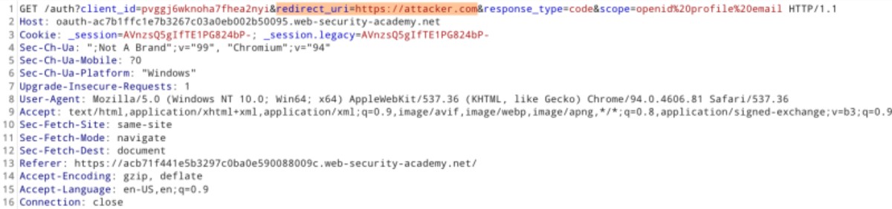
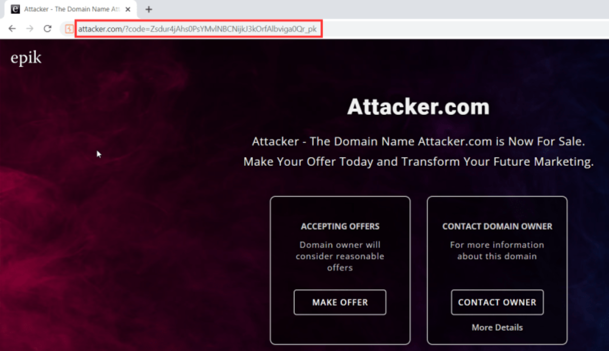
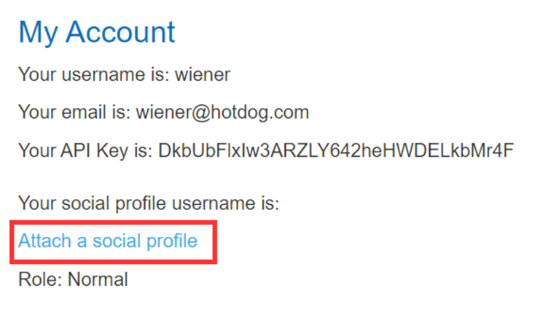
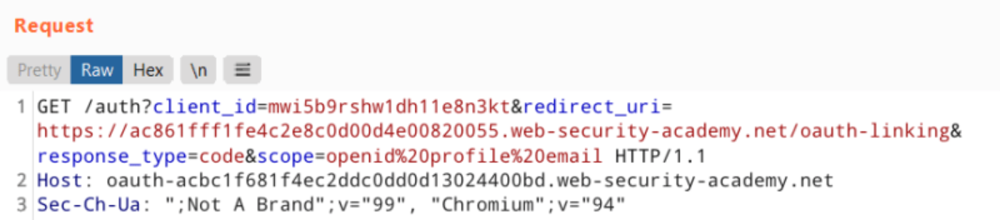
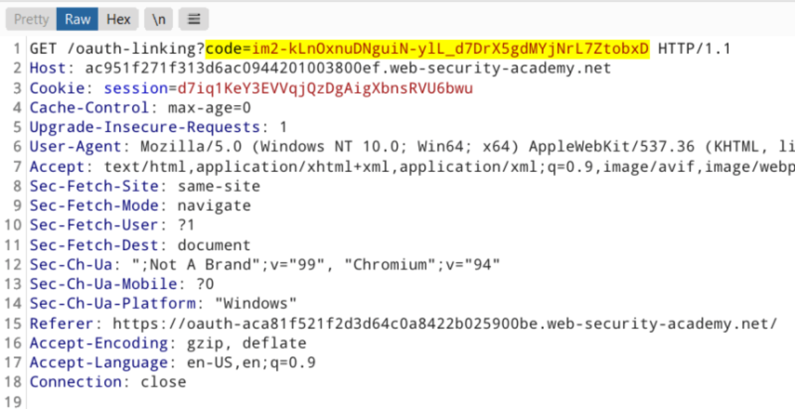
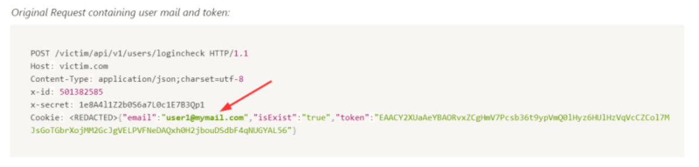
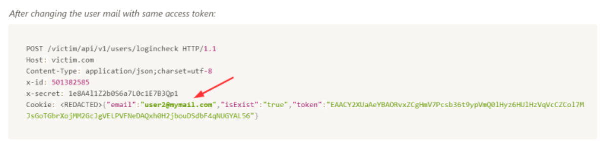

OAuth Vulnerabilities
1. Stealing OAuth Token via redirect_uri
This is the infamous OAuth-based vulnerability is when the configuration of the OAuth service itself enables attackers to steal authorization codes or access tokens associated with other users’ accounts.
By stealing a valid code or token, the attacker may be able to access the victim’s data. Ultimately, this can completely compromise their account – the attacker could potentially log in as the victim user on any client application that is registered with this OAuth service.
Sites often have HTTP parameters or URL parameters that cause the web application to redirect to a specified URL without any user action. Open redirects are a type of vulnerability that happens when an attacker can manipulate the value of this parameter and cause users to be redirected offsite.
A common scenario is when a website redirects users to their original location after login. When a user visits their dashboard at “https://example.com/dashboard” but is not logged in, the application redirects them to the login page. Then, it will redirect the user to their dashboard located at https://example.com/dashboard after they log in.
https://example.com/login?redirect=https://example.com/dashboard
During an open redirect attack, users are unintentionally redirected to an external site.
https://example.com/login?redirect=https://attacker.com
So how does Open redirect is going to help us here? It helps us to steal OAuth tokens. OAuth token thefts rely on the manipulation of the “redirect_uri” parameter to steal the access token from the victim’s account.
The redirect_uri is very important because sensitive data, such as Access token is appended to the URL after authorization. If the redirect_uri can be redirected to an attacker-controlled server, this means the attacker can potentially take over a victim’s account by using the Access token themselves and gaining access to the victim’s data.
For example, Start the OAuth flow and change the redirect_uri value to the attacker control website.

The code has been redirected to the attacker control website (attacker.com). Now the attacker can use this code and complete the OAuth flow and takeover the victim’s account.

But sometimes, the client application implements some whitelist of their genuine callback URLs when registering with the OAuth service to mitigate this attack. But when there is a filter there is a bypass 😈 so you can use different types of bypass methods to bypass this white list. You can refer to this GitHub Repo: Open Redirect Payload List (https://github.com/payloadbox/open-redirect-payload-list)
2. Improper handling of state parameter
Very often, the state parameter is completely omitted or used in the wrong way. If a state parameter is nonexistent, or a static value that never changes, the OAuth flow will very likely be vulnerable to CSRF. Sometimes, even if there is a state parameter, the application might not do any validation of the parameter and an attack will work. The way to exploit this would be to go through the authorization process on your own account and pause right after authorizing.
Let’s understand this with an example,
Suppose there is a website example.com and the attacker signs up on that website using email and password. After login attacker see that there is a attach social media account to his profile.

So now the attacker clicked on Attach a social profile , and an OAuth request is made

You can see in this above request the state parameter is missing, which means this OAuth flow is vulnerable to CSRF which means we can use the code assigned to us to attach our social media handle to the victim’s account. Let’s get code by forwarding this request.
Here we have got the OAuth Code . Now Generate CSRF POC of this request using burp suite and drop the request. This is important to ensure that the code is not used and, therefore, remains valid.

Now suppose you send this CSRF POC to the victim and they executed the POC, so now the attacker will be able to log in to the victim’s account by using the attacker’s social media account because the attacker’s social media handle is now got attached to victim’s account. Full Account takeover!!!
Check Point:
▪ Missing State parameter? (CSRF)
▪ Predictable State parameter?
▪ Is State parameter being verified?
3. Assignment of accounts based on the email address
Suppose there is an application that does not verify email while creating an account, so try creating an account with a victim’s email address and attacker password before the victim has registered. If the victim then tries to register or sign in with a third party, such as Google, it’s possible the application will do a lookup, see that email is already registered, then link their Google account to the attacker-created account. Now attackers can log in to victims’ accounts, this is a pre account takeover where an attacker will have access to the victim’s account if they created it prior to the victim registering.
Steps:
Register as the victim with his email and your desired password.
The victim then tries to log in using OAuth such as Google or Facebook.
The application queries the database and responds with: email already exists. and links their account to the attackers.
If there is no unlink option on the application, the attacker can always log in on behalf of the user using OAuth even if they reset the password.
4. Improper Oauth token validation
There are chances that the application checks for the presence of an access token and a valid email upon performing an Oauth login but does not validate if that token given by Oauth belongs to a particular user or not. In such cases, we can use an access token generated using Google or Facebook and login to any other registered user’s account of the victim application if we know their email.
Hence, it is possible for a user to login into any registered user’s victim account just by replacing his email id with that of the victim’s email id as there is no access token validation individually for every user registered.


5. Reusability of an OAuth access token
Sometimes there are cases where an OAuth token previously used does not expire with an immediate effect post log out of the account. In such cases there is a possibility to log in with the previous Oauth token i.e; replace the new OAuth access token with the old one and continue to the application. This should not be the case and is considered a very bad practice.
POST /auth/api/profile HTTP/1.1
Host: victim.com
Referer:https://victim.com/loginCheck
Content-Length: 1123
Cookie: <REDACTED>
Connection: close{"mailingConsent":false,"accessToken":"EAACY2XUaAeYBAORvxYq8G8hLSbOZCBPxdEFgupDI7E8cKNIE5G4jUkgZCgHmV7Pcsb36t9ypVmQ0lHyz6HUlHzVqVcCZCol7MJsGoTGbrXojMM2GcJgVELPVFNeDAQxh0H2jbouDSdbF4qNUGYAL56g1uoB6q274skqZAc3SboZBP"}
6. Host header injection at access token request
Although quite uncommon it is sometimes good to test if the host is being validated at the server-side or not while carrying the access token. If it is not then there is a possibility to redirect the token to the malicious host via host header injection.
For example consider the following original request,
GET /api/twitter/login?csrf=<redacted> HTTP/1.1
Host: victim.org
Referer:https://www.victim.org/
Cookie:<redacted>
Here, upon clicking login with Twitter on victim.org we get this request now if you change the host to something like attacker.com/www.victim.org it will sometimes redirect the Oauth authorization link to the attacker and obtain the user’s account details via the token that is issued.
Edited request,
GET /api/twitter/login?csrf=<redacted> HTTP/1.1
Host: attacker.com/victim.org
Referer:https://www.victim.org/
Cookie:<redacted>
7. Access Token Stored in Browser History
If the Resource Provider makes a GET request which contains the Access Token in the URL parameters, then the sensitive OAuth variables may be stored in browser history. This is easy to test for and can be a quick problem report.
The threat is of medium severity if the access token is stored, but if only the code or state is stored, it’s low severity as the attacker would require some sort of local access to the victim’s machine. Even then, it’s likely that the code has already been redeemed for an access token, so the only real attacks would revolve around stealing a reused state variable.
Steps:
1. Select an OAuth provider, Press Connect Button.
2. Complete an OAuth flow and authorize the scope.
3. Open your browser’s history and see if any of the Location entries contain sensitive information.
Avoid solutions that return tokens directly in browser response URLs, such as the deprecated Implicit Flow. These may include tokens in the browser history and have many security risks:
https://www.example.com#token=abdhs238023r&state=h802dfh02r
8. Flawed scope validation
Every time when users log in to the authorization server, they will be presented with a list of data that the client application wants to access (Like Email, profile picture).
Authorization code Flow
With the authorization code grant type, the user’s data is requested and sent via secure server-to-server communication, which a third-party attacker is typically not able to manipulate directly. However, it may still be possible to achieve the same result by registering their own client application with the OAuth service.
For example, let’s say the attacker’s malicious client application initially requested access to the user’s email address using the openid email scope. After the user approves this request, the malicious client application receives an authorization code. As the attacker controls their client application, they can add another scope parameter to the code/token exchange request containing the additional profile scope:
POST /token
Host: oauth-authorization-server.com
…
client_id=12345&client_secret=SECRET&redirect_uri=https://client-app.com/callback&grant_type=authorization_code&code=a1b2c3d4e5f6g7h8&scope=openid%20 email%20profile
If the server does not validate this against the scope from the initial authorization request, it will sometimes generate an access token using the new scope and send this to the attacker’s client application:
{
"access_token": "z0y9x8w7v6u5",
"token_type": "Bearer",
"expires_in": 3600,
"scope": "openid email profile",
…
}
The attacker can then use their application to make the necessary API calls to access the user’s profile data.
Implicit grant flow
In this type, the access token is sent via the browser. Attackers can steal tokens and use them directly by sending a normal browser-based request to the OAuth endpoint, manually adding a new scope parameter in the process.
9. Implicit Grant Coercion:
This attack rarely works, but may be worth doing with a more obscure Resource owner. The initial request from an Authorization server has an optional parameter response_type. This attack attempts to convert the authorization code grant to an implicit grant, which skips the stage involving an authorization Code and immediately returns an Access Token.
Fun fact: Facebook by default allows for the Code workflow as well as the Implicit (called Token on Facebook) grant. Just something to keep in mind.
Test Steps:
1.2Select an OAuth provider, Start Intercepting, Press Connect Button.
2. On the initial request to the IDP, modify the response_type value passed as a URL parameter by setting it equal to: “token”.
3. Continue through the authorization flow, forwarding requests until the Redirect URI is reached.
4. If a raw Access Token is returned here, then the IDP is vulnerable to this attack.
10. Code Flaws
▪ Re-Using the code.
▪ Code Predict/Bruteforce and Rate-limit?
▪ Is the code for application X valid for application Y?